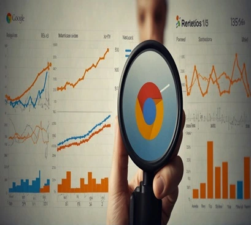
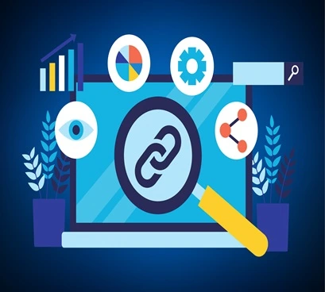

Design demand capture that compounds
Shift from keyword chasing to loop design: distribution → intent → conversion → reinvestment.
Explore acquisition insightsFrameworks, measurement, and playbooks built for scale beyond channel tactics.
Curated for operators who care about compounding growth, clean measurement, and durable SEO.
Organic acquisition is a loop. Measurement turns content into compounding growth.
A forward-looking analysis of how AI search is reshaping intent capture, content design, and organic acquisition strategy.
Why this matters now: answer engines are compressing discovery windows, so growth teams need defensible demand capture and measurable content loops.

Four pillars that keep acquisition compounding: acquisition loops, measurement, content as product, and lifecycle retention.
Shift from keyword chasing to loop design: distribution → intent → conversion → reinvestment.
Explore acquisition insightsDefine north-star metrics, map the funnel, and hold content accountable to revenue outcomes.
See measurement playbooksEditorial systems, content-led UX, and quality signals that win in search and retention.
Browse content strategyRetention, activation, and lifecycle journeys that expand LTV beyond acquisition.
Discover lifecycle thinkingBrowse by category
Fresh thinking across content strategy, industry shifts, analytics, and technical SEO.

The shifts that change how you prioritize discovery, visibility, and intent capture this year.

Align editorial, SEO, and revenue into one narrative that compounds across the funnel.

Turn GA4 into a decision engine with advanced analysis and growth-ready tracking.

A fast checklist to clear bottlenecks and restore momentum in technical performance.
Short-form ideas expanded into deeper strategy and execution playbooks.
How credibility signals shape search visibility and content prioritisation.
StrategyA structured plan for building systems, not one-off initiatives.
AnalyticsConnect your stack to unlock better attribution and decision-making.
Highlights from strategies that turned into measurable growth outcomes.
Category-defining content now anchors high-intent organic demand.
Compounding SEO systems that outperform paid acquisition over time.
Strategy and measurement rebuilt to scale quality and conversion.
Curated insights on growth systems, SEO, and measurement to help you move from idea to execution.
Recommended based on what you read.
Why answer engines compress discovery and how to defend demand capture with systems.
The shifts that change how you prioritize discovery, visibility, and intent capture.
Align editorial, SEO, and revenue into one narrative that compounds across the funnel.
Turn GA4 into a decision engine with advanced analysis and growth-ready tracking.
A fast checklist to clear bottlenecks and restore momentum in technical performance.

Make credibility a growth lever by translating E-A-T into content signals.
A systemized roadmap for planning, sequencing, and measuring SEO work.
Connect your stack so attribution and insights keep pace with growth bets.
A practical checklist for creating content that ranks and keeps readers engaged.
Voice intent is shaping query design—here’s how to adapt your content model.
A clear comparison to decide what to keep, migrate, and measure next.
Build a technical base that keeps future content fast, indexable, and durable.

The essentials for setting up GA4 so every growth experiment is measurable.
Build authority beyond your site with signals that compound over time.

The new ranking factors that shape trust, engagement, and visibility in 2024.

A practical playbook for earning authority-building links without spam.